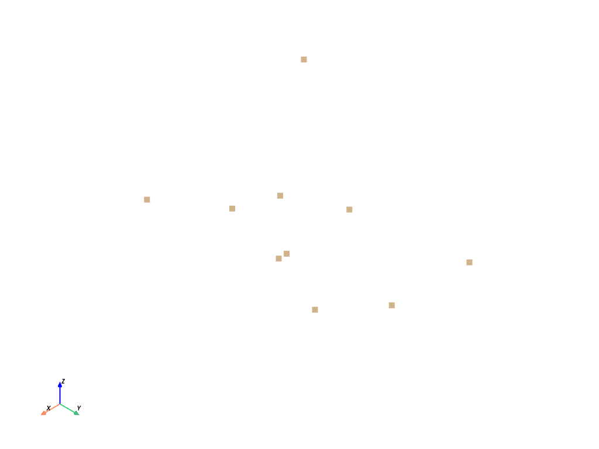

pyvista.PointSet#
- class PointSet(points=None, deep=False, force_float=True)[ソース]#
点の集合を格納するための具体的なクラスです。
これは、点の集合を表す具象クラスで、ジオメトリを表現するために "点" の配列を明示的に使用するデータセットのためのインターフェイスを指定します。このクラスは、点群に対するフィルタの性能を向上させるのに有効ですが、プロットには使えません。
詳細は VTK: vtkPointSet Details を参照してください。
- パラメータ
- points
Sequence,optional 点の位置を含むリスト、numpy配列、またはシーケンス。点の
(N, 3)配列である必要があります。- deepbool,
optional 入力
pointsをコピーするか，コピーせずに入力から PointSet を作成するかを指定します．deep=Trueを設定すると，メッシュに影響を与えずにメッシュの外部でオリジナルの配列を修正できます．デフォルトはFalseです．- force_floatbool,
optional データ型が非浮動小数点型の場合に，そのデータ型を
float32にキャストします．デフォルトはTrueです．これをFalseに設定すると，非浮動小数点型を許容することになりますが，データセットを変換する際に，中間の浮動小数点数が切り捨てられる可能性があります．
- points
備考
このクラスは
vtk>=9.1.0が必要です。vtk<9.1.0では、このクラスは抽象クラスであり、インスタンス化できません。例
numpyの配列から10点の単純な点群を作成します。
>>> import numpy as np >>> import pyvista >>> rng = np.random.default_rng() >>> points = rng.random((10, 3)) >>> pset = pyvista.PointSet(points)
点セットをプロットします。注意：プロットする際には、内部的に
pyvista.PolyDataにキャストされます。>>> pset.plot(point_size=10)
 メソッド
PointSet.add_field_array(scalars, name[, deep])フィールドデータを追加します．
PointSet.add_field_data(array, name[, deep])フィールドデータを追加します．
PointSet.cast_to_pointset([deep])このオブジェクトの新しい表現を
pyvista.PointSetとして取得します．PointSet.cast_to_polydata([deep])このデータセットをpolydataにキャストします。
このオブジェクトの新しい表現を
pyvista.UnstructuredGridとして取得します．PointSet.cell_bounds(ind)セルの境界ボックスを取得します．
PointSet.cell_centers([vertex, progress_bar])このデータセットのセルの中心に点を生成します．
データから日付へのセル変換
セル内のポイント数を取得します．
PointSet.cell_points(ind)セル内の点を取得します．
PointSet.cell_type(ind)セルの型を取得します．
PointSet.center_of_mass([scalars_weight])メッシュの重心の座標を返します．
点/セル/フィールドデータからすべての配列を削除します．
すべてのセルデータを削除します．
すべてのセル配列を削除します．
点/セル/フィールドデータからすべての配列を削除します．
すべてのフィールドデータを削除します．
すべてのフィールドデータを削除します．
すべての点データを削除します．
すべての点配列を削除します．
このメッシュからテクスチャをクリアします．
PointSet.clip([normal, origin, invert, ...])原点と法線を指定して，データセットを平面でクリップします．
PointSet.clip_box([bounds, invert, factor, ...])境界によって定義された境界ボックスによってデータセットをクリップします．
PointSet.clip_scalar([scalars, invert, ...])データセットをスカラーでクリップします．
PointSet.clip_surface(surface[, invert, ...])pyvista.PolyDataサーフェスメッシュを使用して任意のメッシュタイプをクリップします．メッシュのセルごとに (ジオメトリ) 精度の関数を計算します．
PointSet.compute_cell_sizes([length, area, ...])1 D (長さ) ，2 D (面積) ，および3 D (体積) セルのサイズを計算します．
PointSet.compute_derivative([scalars, ...])点/セル スカラフィールドの派生ベースの量を計算します．
PointSet.compute_implicit_distance(surface)ポイントから表面までのインプリシット距離を計算します．
PointSet.connectivity([largest, progress_bar])接続されたボディ/ボリュームを検索し，ラベル付けします．
PointSet.contour([isosurfaces, scalars, ...])入力されたコンターを配列で表現します．
PointSet.copy([deep])オブジェクトのコピーを取得します．
PointSet.copy_attributes(dataset)入力データセットオブジェクトのデータ属性をコピーします．
別のオブジェクトからこのオブジェクトにpyvistaメタデータをコピーします．
PointSet.copy_structure(dataset)入力データセットオブジェクトの構造(ジオメトリとトポロジ)をコピーします．
PointSet.ctp([pass_cell_data, progress_bar])データから日付へのセル変換
PointSet.decimate_boundary([...])境界の三角形分割の小数点付きバージョンを取得します．
PointSet.deep_copy(to_copy)このデータオブジェクトをディープコピーとして別のデータオブジェクトで上書きします．
PointSet.delaunay_3d([alpha, tol, offset, ...])メッシュの3D Delaunay三角形分割を作成します．
PointSet.elevation([low_point, high_point, ...])データセットにスカラー値を生成します．
PointSet.extract_all_edges([progress_bar])データセットのすべての内部/外部エッジをPolyDataとして抽出します．
PointSet.extract_cells(ind[, progress_bar])グリッドのサブセットを取得します．
メッシュの表面からエッジを抽出します．
PointSet.extract_geometry([progress_bar])ボリュームまたは構造化グリッドデータセットの外側サーフェスを抽出します．
PointSet.extract_largest([inplace, progress_bar])メッシュ内の最大接続セットを抽出します．
PointSet.extract_points(ind[, ...])指定されたポイントインデックスのいずれかを含む(セルの)グリッドのサブセットを取得します．
PointSet.extract_surface([pass_pointid, ...])グリッドのサーフェスメッシュを抽出します．
PointSet.find_cells_along_line(pointa, pointb)このメッシュのセルのインデックスを，線に沿って求めます．
このメッシュの中で，境界線上にあるセルのインデックスを求めます．
PointSet.find_closest_cell(point[, ...])このメッシュ内の指定したポイントに最も近いセルのインデックスを検索します．
PointSet.find_closest_point(point[, n])このメッシュ内の指定したポイントに最も近いポイントのインデックスを検索します．
与えられた点を含むセルのインデックスを検索します．
PointSet.flip_normal(normal[, point, ...])フリップメッシュは通常のものと同じです．
PointSet.flip_x([point, ...])メッシュをX軸を中心に反転させます．
PointSet.flip_y([point, ...])メッシュをY軸を中心に反転させます．
PointSet.flip_z([point, ...])メッシュをZ軸を中心に反転させます．
PointSet.get_array(name[, preference])点，セル，フィールドのデータの両方から配列を検索します．
PointSet.get_array_association(name[, ...])配列の関連付けを取得します．
PointSet.get_data_range([arr_var, preference])指定した配列のNaN以外の最小値と最大値を取得します．
PointSet.glyph([orient, scale, factor, ...])入力データセットに(グリフと呼ばれる)ジオメトリ表示をコピーします．
PointSet.head([display, html])このデータセットのヘッダ統計情報を取得します．
PointSet.interpolate(target[, sharpness, ...])特定のデータセットからこのメッシュに値を補間します．
PointSet.merge([grid, merge_points, ...])1つまたは複数の他のグリッドをこのグリッドに結合します．
PointSet.outline([generate_faces, progress_bar])入力データセットの全エクステントのアウトラインを作成します．
PointSet.outline_corners([factor, progress_bar])入力データセットのコーナーのアウトラインを生成します．
PointSet.overwrite(mesh)このデータセットin-placeを新しいデータセットのジオメトリとデータで上書きします．
PointSet.plot([off_screen, full_screen, ...])vtkまたはnumpyオブジェクトをプロットします．
PointSet.plot_over_circular_arc(pointa, ...)円弧に沿ってデータセットをサンプリングし，プロットします．
法線ベクトルと極ベクトルで定義された解像度の円弧に沿ってデータセットをサンプリングし，それをプロットします．
PointSet.plot_over_line(pointa, pointb[, ...])高解像度の線に沿ってデータセットをサンプリングし，プロットします．
点データをセルデータに変換します．
pointsのデータ型を倍精度に変換します．
PointSet.probe(points[, tolerance, ...])指定したポイント位置のサンプルデータ値．
PointSet.ptc([pass_point_data, progress_bar])点データをセルデータに変換します．
PointSet.reflect(normal[, point, inplace, ...])平面でデータセットを反射します．
PointSet.remove_cells(ind[, inplace])セルの除去．
PointSet.rename_array(old_name, new_name[, ...])配列名を変更するには，配列を検索して名前を変更します．
PointSet.rotate_vector(vector, angle[, ...])メッシュをベクトルを中心に回転します．
PointSet.rotate_x(angle[, point, ...])メッシュをX軸を中心に回転します．
PointSet.rotate_y(angle[, point, ...])メッシュをY軸を中心に回転します．
PointSet.rotate_z(angle[, point, ...])メッシュをZ軸を中心に回転します．
PointSet.sample(target[, tolerance, ...])渡されたメッシュからこのメッシュに配列データをリサンプルします．
PointSet.sample_over_circular_arc(pointa, ...)円弧上のデータセットをサンプリングします．
法線ベクトルと極ベクトルで定義された円弧上のデータセットをサンプリングし，それをプロットします．
PointSet.sample_over_line(pointa, pointb[, ...])データセットを1行に抽出します．
データセットを複数行に分割してサンプリングする．
PointSet.save(filename[, binary, texture])このvtkオブジェクトをファイルに保存します．
PointSet.scale(xyz[, ...])メッシュをスケールします．
PointSet.select_enclosed_points(surface[, ...])ポイントが閉じた表面の内側にあるかどうかをマークします．
PointSet.set_active_scalars(name[, preference])スカラーを名前で検索し，適切にアクティブに設定します．
PointSet.set_active_tensors(name[, preference])テンソルを名前で検索し，適切にアクティブに設定します．
PointSet.set_active_vectors(name[, preference])ベクトルを名前で検索し，適切にアクティブに設定します．
PointSet.shallow_copy(to_copy)別のデータセットからこのデータセットへの浅いコピーを作成します．
PointSet.shrink([shrink_factor, progress_bar])メッシュの個々の面を縮小します．
PointSet.slice([normal, origin, ...])指定した原点および法線ベクトル方向の平面でデータセットをスライスします．
PointSet.slice_along_axis([n, axis, ...])指定した軸に沿って，入力データセットのスライスを多数作成します．
PointSet.slice_along_line(line[, ...])パスとしてpolyline/splineを使用してデータセットをスライスします．
PointSet.slice_orthogonal([x, y, z, ...])3つの直交平面上のデータセットから3つの直交スライスを作成します．
PointSet.split_bodies([label, progress_bar])接続されたボディ/ボリュームを検索，ラベル付け，および分割します．
PointSet.streamlines([vectors, ...])ベクトルフィールドを積分して，流線を生成します．
2Dデータに等間隔の流線を生成します．
PointSet.streamlines_from_source(source[, ...])ソースメッシュのポイントからベクトルの流線を生成します．
PointSet.surface_indices([progress_bar])グリッドのサーフェスインデックスを取得します．
PointSet.tessellate([max_n_subdivide, ...])メッシュをテッセレーションします．
PointSet.texture_map_to_plane([origin, ...])このデータセットをユーザ定義平面にテクスチャマップします．
PointSet.texture_map_to_sphere([center, ...])このデータセットをユーザ定義球にテクスチャマップします．
PointSet.threshold([value, scalars, invert, ...])入力データセットに
vtkThresholdフィルタを適用します．PointSet.threshold_percent([percent, ...])データセットを，アクティブなスカラー配列上の範囲のパーセンテージでしきい値化します．
PointSet.transform(trans[, ...])このメッシュを4x4変換で変換します．
PointSet.translate(xyz[, ...])メッシュを移動します．
PointSet.triangulate([inplace, progress_bar])すべて三角形のメッシュを取得します．
PointSet.warp_by_scalar([scalars, factor, ...])データセットのポイントをポイントデータスカラー配列の値でワープします．
PointSet.warp_by_vector([vectors, factor, ...])データセットのポイントをポイントデータスカラー配列の値でワープします．
アトリビュート
アクティブな法線を配列で取得します．
アクティブなスカラーを配列で取得します．
アクティブなスカラーの関連付けと名前を返します．
アクティブなスカラーの名前を取得します．
ポイント上のアクティブなテクスチャ座標を取得または設定します．
アクティブなテンソル配列を取得します．
アクティブなテンソルのフィールドと名前を取得します: [field, name]．
アクティブなテンソル配列の名前を取得します．
アクティブなベクトル配列を取得します．
アクティブなベクトルの関連付けと名前を返します．
アクティブなベクトル配列の名前を取得します．
データセットオブジェクトの実際のサイズを取得します．
データセットの配列名のリストを取得します．
アクティブなベクトルデータのグリフ表現を矢印で取得します．
このデータセットの境界ボックスを取得します．
DataSetAttributesとしてvtkCellDataを取得します．
DataSetAttributesとしてvtkCellDataを取得します．
境界ボックスの中心を取得します．
バウンディングボックスの範囲を取得します．
DataSetAttributesとしてvtkFieldDataを取得します．
DataSetAttributesとしてFieldData を取得します．
境界ボックスの対角線の長さを取得します．
基盤となるVTK C++オブジェクトのアドレスを取得します．
データセット内に存在する配列の数を取得します．
データセット全体のセル数を取得します．
データセット全体のポイント数を取得します．
セルの数を取得します．
ポイント数を取得します．
DataSetAttributesとしてvtkPointDataを取得します．
DataSetAttributesとしてvtkPointDataを取得します．
ポイントへの参照をnumpyオブジェクトとして取得します．
ポイント上のアクティブなテクスチャ座標を取得します．
互換性のある
vtk.vtkTextureオブジェクトを保持する辞書を取得します．アクティブなベクトルを取得します．
メッシュボリュームを取得します．